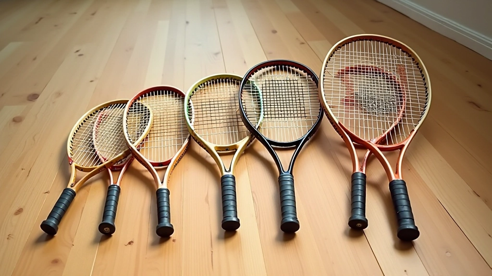

اختيار المضرب المناسب للأطفال
اختيار المضرب الصحيح هو أساس رحلة طفلك في التنس. نقدم لك دليلاً عملياً شاملاً لاختيار الحجم والوزن المناسبين حسب عمر الطفل وقدرته البدنية.
لماذا يعتبر المضرب الصحيح مهماً جداً؟
المضرب الخاطئ يمكن أن يحبط الطفل ويجعل التعلم صعباً. المضرب الثقيل جداً يتعب الذراع، والمضرب الطويل جداً يؤثر على التوازن والسيطرة. من الأساسي أن يشعر الطفل بالراحة والثقة عند إمساك المضرب.
لا تقلق إن لم تكن متخصصاً — هذا الدليل سيوضح لك بالضبط ما تبحث عنه. نحن سنشرح الأحجام والأوزان والمواد، وكل ما تحتاج لمعرفته لاختيار المضرب الأنسب لطفلك.
أحجام المضارب حسب العمر
يوجد ستة أحجام أساسية للمضارب، كل واحد مناسب لفئة عمرية معينة. الحجم يُقاس بالبوصات، والمضرب الصحيح يجب أن يصل تقريباً إلى الكتف عندما يقف الطفل وينحني قليلاً.
19 بوصة
للأطفال من 4-6 سنوات. الخيار الأول للمبتدئين الصغار جداً.
21 بوصة
للأطفال من 6-8 سنوات. الحجم الأكثر شيوعاً للمبتدئين الصغار.
23 بوصة
للأطفال من 8-10 سنوات. حجم انتقالي شهير جداً.
25 بوصة
للأطفال من 10-12 سنة. يقترب من حجم البالغين.
26 بوصة
للأطفال من 12-14 سنة. قريب جداً من حجم البالغين القياسي.
27 بوصة
للمراهقين والبالغين. الحجم القياسي والنهائي.

الوزن والسيطرة
الوزن مهم جداً لأنه يؤثر على قوة الضربة والتحكم. المضرب الخفيف جداً قد لا يعطي قوة كافية، والمضرب الثقيل يتعب الذراع بسرعة ويصعب التحكم به.
الوزن المثالي للأطفال يتراوح بين 180-230 غرام. المضارب الخاصة بالأطفال أخف من مضارب البالغين (260-340 غرام) بقصد.
جرب المضرب قبل الشراء إن أمكن. اطلب من الطفل أن يمسك المضرب ويرفعه لأعلى. إذا كان يشعر بثقل شديد أو تعب في الذراع بسرعة — فالمضرب ثقيل جداً. المضرب الصحيح يجب أن يشعر به الطفل خفيفاً وسهل التحكم به.
المواد والجودة
المضارب الحديثة تُصنع من مواد مختلفة تؤثر على الأداء والمتانة. اختيار المادة المناسبة يعتمد على مستوى الطفل والميزانية.
الألومنيوم
متين وخفيف وغير مكلف. اختيار رائع للمبتدئين. يقاوم الضربات ولا ينكسر بسهولة.
مزيج الألياف
توازن جيد بين الأداء والسعر. يوفر مرونة أفضل والتحكم في الكرة.
ألياف الكربون
الخيار الأفضل للأداء العالي. خفيف جداً وقوي. أغلى ثمناً لكن يدوم طويلاً.
نصائح عملية عند الشراء
اتبع هذه الخطوات البسيطة لاختيار المضرب الأنسب دون الوقوع في الأخطاء الشائعة.
قس طول الطفل بدقة
استخدم الجدول أعلاه كدليل. الحجم الصحيح يجب أن يصل تقريباً إلى الكتف عندما يقف الطفل.
دع الطفل يختبر المضرب
إذا أمكن، اسمح للطفل بإمساك المضرب وضرب كرات قليلة. الشعور الحقيقي أهم من النظرية.
لا تشتري مضرباً "للنمو"
فكرة شراء مضرب كبير حتى ينموه الطفل خاطئة. المضرب الكبير سيجعل التعلم صعباً جداً.
تحقق من قبضة اليد
القبضة يجب أن تكون بحجم راحة الطفل. قبضة صغيرة جداً أو كبيرة جداً تؤثر على السيطرة.
اختر من ماركات موثوقة
الماركات الكبرى مثل Wilson و Head و Babolat و Dunlop توفر جودة موثوقة للأطفال.
ملاحظة مهمة
تختلف احتياجات كل طفل عن الآخر. النتائج والتقدم يعتمد على الممارسة المنتظمة والتدريب الصحيح. اختيار المضرب الصحيح هو الخطوة الأولى فقط. الدعم والتشجيع من الأهل والمدرب هما المفتاح الحقيقي للنجاح.
الخطوة التالية
اختيار المضرب الصحيح ليس صعباً — فقط اتبع الإرشادات أعلاه. بعد اختيار المضرب، تأكد من أن طفلك لديه الملابس المناسبة والحذاء المريح. ثم ابدأوا الدروس مع مدرب متمرس يمكنه توجيه الطفل من البداية.
إذا كنت مهتماً بالتسجيل في أكاديمية متخصصة، تأكد من اختيار أكاديمية توفر الدعم الكامل للمبتدئين وتساعدك في اختيار المعدات الصحيحة.